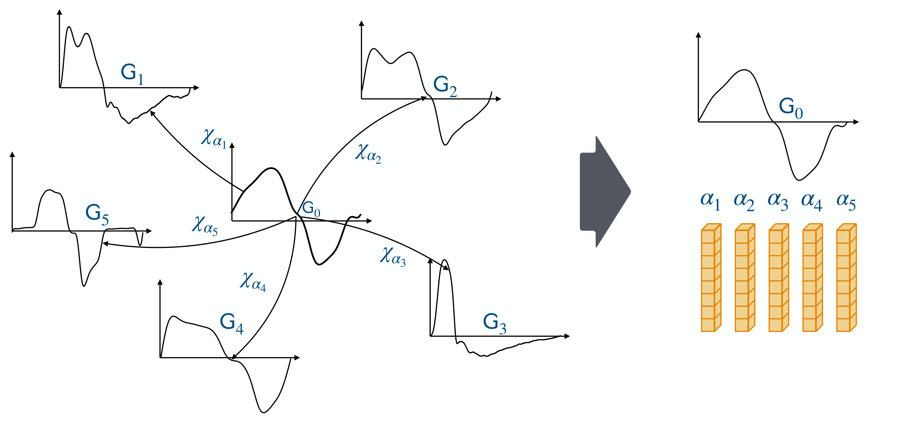
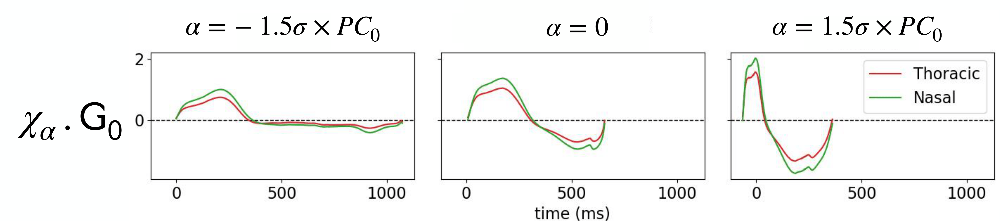

TS-PCA¶
PCA for time series documentation¶
Overview¶
This repository gathers the functions developed in the paper “Shape Analysis for Time Series” https://proceedings.neurips.cc/paper_files/paper/2024/file/ad86418f7bdfa685cd089e028efd75cd-Paper-Conference.pdf
It is possible to represent irregularly sampled time series of different lengths and to apply kernel PCA to these representations in order to identify the main modes of shape variation in the time series.
{kind=link}

Time series graphs \((\mathsf{G}_i)_{i\in[5]}\) are represented as the deformations of a reference time series graph \(\mathsf{G}_0\) by transformations \((\chi_{\alpha_i})_{i\in[5]}\) parameterized by \((\alpha_i)_{i\in[5]}\).¶
These methods work particularly well when the analyzed dataset is homogeneous in terms of shapes, for example when each time series corresponds to:
a heartbeat recording,
a respiratory cycle,
an electricity consumption pattern,
a heating load curve.
Dataset Format¶
The main requirement is to represent the time series dataset as a collection of time series graphs.
Each time series graph should be an array T of shape (n_samples, d+1), where:
T[:, 0]contains the time points,T[:, 1:]contains the time series values of dimensiond.
The full dataset should be an array of fixed shape
(n_time_series, n_samples_max, d+1)
along with a corresponding mask of shape
(n_time_series, n_samples_max, 1).
Here, n_samples_max is the maximum number of samples among all time series.
This accommodates the fact that each time series may have a different number of samples.
Default parameters work well when the distance between two consecutive time points is approximately 1.
TS-PCA: Basic Usage Example¶
This example demonstrates the basic workflow of using the TS-PCA package
to analyze time-series data using TS-LDDMM representations and Kernel PCA.
# Import or generate a toy dataset
N = 8
dataset, dataset_mask, graph_ref, graph_ref_mask = generate_easy_dataset(N=N)
# dataset is an array of shape (8, 200, 2)
# dataset_mask is an array of shape (8, 200, 1)
# Initialize the TS-PCA class
class_test = TS_PCA_()
# Step 1: Fit TS-LDDMM representations
# This learns the temporal-shape embeddings of the dataset.
# Set learning_graph_ref=True to learn the reference graph;
# here we keep it fixed.
class_test.fit_TS_LDDMM_representations(
dataset,
dataset_mask,
learning_graph_ref=False,
graph_ref=graph_ref,
graph_ref_mask=graph_ref_mask
)
# Step 2: Fit Kernel PCA on the learned representations
class_test.fit_kernel_PCA()
# Step 3: Visualize the principal components
class_test.plot_components()
{kind=link}

After applying Kernel PCA to the TS-LDDMM features \((\alpha_j)_{j \in [N]}\) extracted from a dataset of mouse respiratory cycles under drug exposure, we visualize the deformations \(\chi_\alpha \cdot \mathsf{G}_0\) of the reference time series graph \(\mathsf{G}_0\) as \(\alpha\) varies along the principal component \(PC_0\). Notably, \(\alpha = -1.5 \sigma \times PC_0\) captures the deformation accounting for the effect of the drug on the respiratory cycle.¶
Project Structure¶
The TS_PCA_ class provides a high-level interface that wraps all the main functionalities of the package, while the kernel, lddmm, loss, and utils modules implement the core underlying methods.